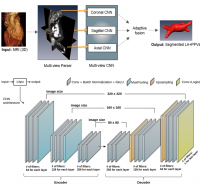
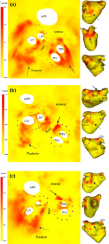
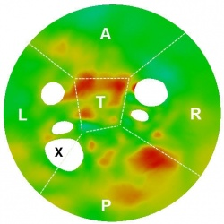

Publications
From Rashed Karim Wiki
(† - as first author, ‡ - as second author, ° - as last author, IMP - impact factor)
All papers listed below are peer-reviewed. Papers from proceedings listed below are normally 8-page papers
  Cardiac-NET: Encoder-Decoder network for heart chamber segmentation. This a neural network that learns the 3D shape of the left side of the heart from training images
Cardiac-NET: Encoder-Decoder network for heart chamber segmentation. This a neural network that learns the 3D shape of the left side of the heart from training images
2018
- †Left atrial voltage, circulating biomarkers of fibrosis, and atrial fibrillation ablation. A prospective cohort study, PLOS One Journal. PDF.
- The optimization of post-ablation atrial scar imaging: a cross-over study, recently accepted to Journal of Cardiovascular Magnetic Resonance (JCMR) (IMP=5.6), 2018
- ‡The reproducibility of late gadolinium enhanced imaging of post-ablation atrial scar: a cross-over study, recently accepted to Journal of Cardiovascular Magnetic Resonance (JCMR), (IMP=5.6), 2018
2017
- ‡A platform for quantifying atrial structure remodelling, Proceedings of Computers in Cardiology (CniC) Conference 2017
- Standardised Unfold Mapping: A technique to permit left atrial regional data display and analysis, Journal Interventional Cardiac Electrophysiology (in press)
- ‡ Cardiac NET: Segmentation of the left atrium using Segmentation of left atrium and proximal pulmonary veins from MRI using multi-view convolution neural networks, MICCAI main conference, 2017
- A planning and guidance platform for cardiac resynchronisation therapy, IEEE Transactions Medical Imaging 36(11), 2017
- Real time X-MRI guided left ventricular lead implantation for targeted delivery of cardiac resynchronization therapy in JACC: Clinical Electrophysiology, In press
- †Intra-cardiac and peripheral levels of biochemical markers of fibrosis in patients undergoing catheter ablation for atrial fibrillation in Europace. In press. PDF (IMP=3.7)
- ECG imaging of ventricular tachycardia: evaluation against simultaneous non-contact mapping and CMR derived grey zone. Medical & Biological Engineering & Computing, 55(6), 2017 (IMP=1.8)
- °Validating scar quantification for guiding cardiac resynchronisation therapy, in presented at IPEM MEIBioEng meeting 2017 abstract with oral
- °Model-based image analysis of left atrial wall thickness using direct measurements from CT, in presented at IPEM MEIBioEng meeting 2017 abstract with oral
 Flat maps for the heart here showing results from our CMIG paper. They are much like flat maps of the earth. There are mathematical equations governing the transformations from 3D to a constrained 2D geometry
2016
- †Evaluation of state-of-the-art segmentation algorithms for left ventricle infarct from late Gadolinium enhancement MR images in Medical Image Analysis, 30, 2016, pp 95-107, PDF (IMP=4.5)
- Biophysical modelling predicts ventricular tachycardia inducibility and circuit morphology: A combined clinical validation and computer modelling approach. Journal of Cardiac Electrophysiology, 27(7), 2017 (IMP=3.1)
- † Segmentation Challenge on the Quantification of Left Atrial Wall Thickness, Proceedings of the Statistical Atlas and Computational Modelling of the Heart (STACOM), Volume 10124, Lecture Notes in Computer Science pp 193-200. PDF
- Interactive visualization for scar transmurality in cardiac resynchronization therapy, Proceedings of SPIE Medical Imaging, Image-Guided Procedures, Robotic Interventions, and Modeling, 2016.
2015
- ‡3-DOF MR-Compatible Multi-Segment Cardiac Catheter Steering Mechanism in IEEE Transactions Biomedical Engineering, 63(11), 2015.PDF (IMP=2.3)
- ‡A Randomized Prospective Mechanistic CMR Study Correlating Catheter Stability, Late Gadolinium Enhancement and 3-Year Clinical Outcomes in Robotically-Assisted versus Standard Catheter Ablation in Europace, 17(8), 2015. (IMP=3.7)
- Interventional CMR in Electrophysiology - Advances towards clinical translation in Circulation: Arrhythmia and Electrophysiology, 8(1), 2015. (IMP=4.5)
- The Effect of Contact Force in Atrial RF Ablation: Electroanatomical, CMR and Histological Assessment in a Chronic Porcine Model in JACC Clinical Electrophysiology, 1(5), 2015. (IMP = ??)
- Repeat Left Atrial Catheter Ablation: Cardiac Magnetic Resonance Prediction of Endocardial Voltage and Gaps in Ablation Lesion Sets in Circulation: Arrhythmia and Electrophysilogy, 8(2), 2015. (IMP =4.5)
- Benchmark for algorithms segmenting the left atrium from 3D CT and MRI datasets in IEEE Transactions Medical Imaging, 34(7), 2015. PDF (IMP=3.4)
- †Left Atrial Segmentation from 3D Respiratory- and ECG-gated Magnetic Resonance Angiography, Proceedings of Functional Imaging and Modeling of the Heart, Volume 9126, Lecture Notes in Computer Science pp 155-163. PDF
- ‡Tension sensing for a linear actuated catheter robot , Proceedings of 8th International Conference on Intelligent Robotics and Applications (ICIRA2015), Volume 9245, Lecture Notes in Computer Science pp 472-482. PDF
- Catheter contact force estimation from shape detection using a real-time Cosserat rod model, Proceedings of IEEE Intelligent Robots and Systems (IROS), 2015, PDF.
 Flat circular maps of the heart showing tissue information obtained from 3D MRI imaging
2014
- †A method to standardize quantification of left atrial scar from delayed-enhancemet MR images in IEEE Translational Engineering in Health and Medicine, Vol. 2, 2014. PDF (IMP=??)
- †Surface Flattening of the Human Left Atrium and Proof-of-Concept Clinical Applications* in Computerized Medical Imaging and Graphics, 38(4) 2014. PDF (IMP=1.6)
- †Quantitative Magnetic Resonance Imaging Analysis of the Relationship between Contact Force and Left Atrial Scar Formation after Catheter Ablation of Atrial Fibrillation in Journal of Cardiovascular Electrophysiology, 25(2), 2014. PDF (IMP=3.1)
- A novel skeleton based quantification and 3D volumetric visualization of left atrium fibrosis using Late Gadolinium Enhancement Magnetic Resonance Imaging in IEEE Transactions Medical Imaging, 33(2) 2014. PDF (IMP=3.4)
- Multimodality imaging for catheter ablation of atrial fibrillation. Is it still necessary? in International Journal of Cardiology, 175 (3), 2014. (IMP=4.0)
- Cardiac magnetic resonance and electroanatomical mapping of acute and chronic atrial ablation injury. a histological validation study, in European Heart Journal, 2014. (IMP=15.0)
- ‡Statistical Model of Paroxysmal Atrial Fibrillation Catheter Ablation Targets for Pulmonary Vein Isolation, Proceedings of Statistical Atlases and Computational Models of the Heart, Lecture Notes in Computer Science pp 221-230. PDF
2013
- †Evaluation of current algorithms for segmentation of scar tissue from late Gadolinium enhancement cardiovascular magnetic resonance of the left atrium in Journal of Cardiovascular Magnetic Resonance, 15(105), 2013. PDF (IMP=5.6)
- Automated analysis of atrial late gadolinium enhancement imaging correlates with endocardial voltage and clinical outcomes: a two-center study in Heart Rhythm, 10(8), 2013. (IMP=5.0)
- Native T1 mapping in differentiation of normal myocardium from diffuse disease in hypertrophic and dilative cardiomyopathy in JACC: Cardiovascular Imaging, 16(4), 2013. (IMP=6.7)
- Left Atrial Segmentation Challenge: A Unified Benchmarking Framework, Proceedings of Statistical Atlases and Computational Models of the Heart. Volume 8330, Lecture Notes in Computer Science, pp 1-13. PDF
2012
- ‡Acute Pulmonary Vein Isolation Is Achieved by a Combination of Reversible and Irreversible Atrial Injury Following Catheter Ablation in Circulation: Arrhythmia and Electrophysiology, 2012. (IMP=4.5)
- †Infarct Segmentation Challenge on Delayed Enhancement MRI of the Left Ventricle, Proceedings of Statistical Atlases and Computational Models of the Heart. Imaging and Modelling Challenges, Volume 7746, Lecture Notes in Computer Science pp 97-104. PDF
- †Infarct Segmentation of the Left Ventricle Using Graph-Cuts, Proceedings of Statistical Atlases and Computational Models of the Heart, Volume 7746, Lecture Notes in Computer Science pp 71-79. PDF
- ‡Cardiac Unfold: A Novel Technique for Image-Guided Cardiac Catheterization Procedures, Proceedings of Information Processing in Computer-Assisted Interventions, Volume 7330, Lecture Notes in Computer Science pp 104-114. PDF
2011
- †Validation of a Novel Method for the Automatic Segmentation of Left Atrial Scar from Delayed-Enhancement Magnetic, Proceedings of Statistical Atlases and Computational Models of the Heart. Imaging and Modelling Challenges, Volume 7085 of the series Lecture Notes in Computer Science pp 254-262 PDF
- †Automatic Segmentation of Left Atrial Scar from Delayed-Enhancement Magnetic Resonance Imaging, Proceedings of Functional Imaging and Modeling of the Heart. Volume 6666, Lecture Notes in Computer Science pp 63-70. PDF
- †Mapping Contact Force during Catheter Ablation for the Treatment of Atrial Fibrillation: New Insights into Ablation Therapy, Proceedings of Functional Imaging and Modeling of the Heart Volume 6666 of the series Lecture Notes in Computer Science pp 302-303. PDF
2010
- †Automatic Segmentation of Left Atrial Geometry from Contrast-Enhanced Magnetic Resonance Images using a Probabilistic Atlas, In Proceedings of Statistical Atlases and Computational Models of the Heart Volume 6364 of the series Lecture Notes in Computer Science pp 134-143. PDF
2009
- †Left atrium pulmonary veins: segmentation and quantification for planning atrial fibrillation ablaton. Proceedings SPIE Medical Imaging 2009: Visualization, Image-Guided Procedures, and Modeling. PDF
- †Automatic extraction of the left atrial anatomy from MR for atrial fibrillation ablation, Proceedings of IEEE International Symposium on Biomedical Imaging 2009. PDF
- †Left Atrium Segmentation for Atrial Fibrillation Ablation, Proceedings of Medical Image Understanding and Anaysis (MIUA) 2008. PDF
Clinical abstracts
Here is also a full list of peer-reviewed abstracts presented at national and international conferences. Abstracts are normally single page.
Theses
- PhD thesis on image analysis for cardiac left atrium MRI
- MSc thesis in computer vision for pedestrian motion tracking (Distinction grade).
Papers under review
Here is also a of papers which are currently undergoing review

{kind=link}
{kind=link}
{kind=link}
{kind=link}